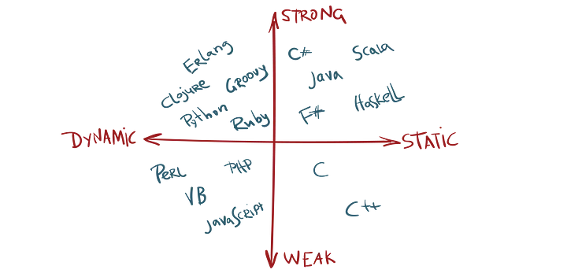

<!DOCTYPE html>
<html lang="en">
  <head>
    <meta charset="utf-8" />
    <meta name="viewport" content="width=device-width, initial-scale=1.0, maximum-scale=1.0, user-scalable=no" />

    <title></title>
    <link rel="stylesheet" href="dist/reveal.css" />
    <link rel="stylesheet" href="css/my-theme.css" id="theme" />
    <link rel="stylesheet" href="plugin/highlight/zenburn.css" />
	<link rel="stylesheet" href="css/layout.css" />
	<link rel="stylesheet" href="plugin/customcontrols/style.css">


    <script defer src="dist/fontawesome/all.min.js"></script>

	<script type="text/javascript">
		var forgetPop = true;
		function onPopState(event) {
			if(forgetPop){
				forgetPop = false;
			} else {
				parent.postMessage(event.target.location.href, "app://obsidian.md");
			}
        }
		window.onpopstate = onPopState;
		window.onmessage = event => {
			if(event.data == "reload"){
				window.document.location.reload();
			}
			forgetPop = true;
		}

		function fitElements(){
			const itemsToFit = document.getElementsByClassName('fitText');
			for (const item in itemsToFit) {
				if (Object.hasOwnProperty.call(itemsToFit, item)) {
					var element = itemsToFit[item];
					fitElement(element,1, 1000);
					element.classList.remove('fitText');
				}
			}
		}

		function fitElement(element, start, end){

			let size = (end + start) / 2;
			element.style.fontSize = `${size}px`;

			if(Math.abs(start - end) < 1){
				while(element.scrollHeight > element.offsetHeight){
					size--;
					element.style.fontSize = `${size}px`;
				}
				return;
			}

			if(element.scrollHeight > element.offsetHeight){
				fitElement(element, start, size);
			} else {
				fitElement(element, size, end);
			}		
		}


		document.onreadystatechange = () => {
			fitElements();
			if (document.readyState === 'complete') {
				if (window.location.href.indexOf("?export") != -1){
					parent.postMessage(event.target.location.href, "app://obsidian.md");
				}
				if (window.location.href.indexOf("print-pdf") != -1){
					let stateCheck = setInterval(() => {
						clearInterval(stateCheck);
						window.print();
					}, 250);
				}
			}
	};


        </script>
  </head>
  <body>
    <div class="reveal">
      <div class="slides"><section  data-markdown><script type="text/template"><!-- .slide: class="drop" -->
<div class="" style="position: absolute; left: 0px; top: 0px; height: 700px; width: 960px; min-height: 700px; display: flex; flex-direction: column; align-items: center; justify-content: center" absolute="true">

## Type Systems Day 1
### By: Jaran Chao and John Whiting
</div></script></section><section  data-markdown><script type="text/template"><!-- .slide: class="drop" -->
<div class="" style="position: absolute; left: 0px; top: 0px; height: 700px; width: 960px; min-height: 700px; display: flex; flex-direction: column; align-items: center; justify-content: center" absolute="true">

## Overview

### High-Level properties of type systems

- Strong vs. Weak Typing
- Static vs. Dynamic
- Nominal vs. Structural
- Duck Typing
- Manifest vs. Inferred
</div></script></section><section  data-markdown><script type="text/template"><!-- .slide: class="drop" -->
<div class="" style="position: absolute; left: 0px; top: 0px; height: 700px; width: 960px; min-height: 700px; display: flex; flex-direction: column; align-items: center; justify-content: center" absolute="true">

## Types are a Spectrum


</div></script></section><section  data-markdown><script type="text/template"><!-- .slide: class="drop" -->
<div class="" style="position: absolute; left: 0px; top: 0px; height: 700px; width: 960px; min-height: 700px; display: flex; flex-direction: column; align-items: center; justify-content: center" absolute="true">

## Static vs. Dynamic

| Static Typing                                                                 |                                                           Dynamic Typing |
| :---------------------------------------------------------------------------- | -----------------------------------------------------------------------: |
| The type of a variable is known at <i style="color:#4e85e4;">compile time</i> | The type of a variable is known at <i style="color:#4e85e4;">runtime</i> |
| The type of a variable <i style="color:#ef3535;">cannot</i> change            |          The type of a variable <i style="color:#4def4d;">can</i> change |
</div></script></section><section  data-markdown><script type="text/template"><!-- .slide: class="drop" -->
<div class="" style="position: absolute; left: 0px; top: 0px; height: 700px; width: 960px; min-height: 700px; display: flex; flex-direction: column; align-items: center; justify-content: center" absolute="true">

## Strong vs. Weak

| Strong Typing                                           |                                              Weak Typing |
| :------------------------------------------------------ | -------------------------------------------------------: |
| <i style="color:#ef3535;">Never</i> possible to convert | <i style="color:#4def4d;">Always</i> possible to convert |

There are no standardized/agreed upon definitions for strong and weakly typed languages.
However, the above terms will be used for the rest of the presentation. <!-- .element: style="font-size: 1.5rem" -->
</div></script></section><section  data-markdown><script type="text/template"><!-- .slide: class="drop" -->
<div class="" style="position: absolute; left: 0px; top: 0px; height: 700px; width: 960px; min-height: 700px; display: flex; flex-direction: column; align-items: center; justify-content: center" absolute="true">

## Python (Strong-Dynamic)

```python
print("hello world" + 10) # Gives a TypeError
print("hello world" + str(10)) # Prints "hello world10"

# Magic Method __str__ for type casting
class Test:
    def __str__(self):
        return "test"

print("hello world" + Test()) # Gives a TypeError
print("hello world" + str(Test())) # Prints "hello worldtest"
```

[Godbolt](https://godbolt.org/z/eP9c4fxj4)
</div></script></section><section  data-markdown><script type="text/template"><!-- .slide: class="drop" -->
<div class="" style="position: absolute; left: 0px; top: 0px; height: 700px; width: 960px; min-height: 700px; display: flex; flex-direction: column; align-items: center; justify-content: center" absolute="true">

## JavaScript (Weak-Dynamic)

```js
// Evalulates to 0
console.log(+[]);

// Evaulates to 1
console.log(+!![]);

// Evaulates to true
console.log([] == 0);

// Evaulates to "banana"
console.log(("b" + "a" + + "a" + "a").toLowerCase());
```

[Godbolt](https://godbolt.org/z/v47GG6Me9)
</div></script></section><section  data-markdown><script type="text/template"><!-- .slide: class="drop" -->
<div class="" style="position: absolute; left: 0px; top: 0px; height: 700px; width: 960px; min-height: 700px; display: flex; flex-direction: column; align-items: center; justify-content: center" absolute="true">

## C/C++ (Weak-Static)

```c
// Fast Inverse Square Root Algorithm for Quake III Arena
float q_rsqrt(float number) {
    long i;
    float x2, y;
    const float threehalfs = 1.5F;
    
    x2 = number * 0.5F;
    y  = number;
    i  = * ( long * ) &y; // evil floating point bit level hacking
    i  = 0x5f3759df - ( i >> 1 ); // what the...
    y  = * ( float * ) &i;
    y  = y * ( threehalfs - ( x2 * y * y ) );
    
    return y;
}
```

[Godbolt](https://godbolt.org/z/WqajehrvK)
</div></script></section><section  data-markdown><script type="text/template"><!-- .slide: class="drop" -->
<div class="" style="position: absolute; left: 0px; top: 0px; height: 700px; width: 960px; min-height: 700px; display: flex; flex-direction: column; align-items: center; justify-content: center" absolute="true">

## Java (Strong-Static)

```java
public class Main {
    static class Test {
        @Override
        public String toString() {
            return "test";
        }
    }
    public static void main(String[] args) {
        // Prints "hello world10"
        System.out.println("hello world" + 10);
        
        // Prints "hello worldtest"
        System.out.println("hello world" + new Test());
    }
}
```

[Godbolt](https://godbolt.org/z/a78jP8G96)
</div></script></section><section  data-markdown><script type="text/template"><!-- .slide: class="drop" -->
<div class="" style="position: absolute; left: 0px; top: 0px; height: 700px; width: 960px; min-height: 700px; display: flex; flex-direction: column; align-items: center; justify-content: center" absolute="true">

## Nominal vs. Structural

| Nominal                                                                   |                                                                         Structural |
| :------------------------------------------------------------------------ | ---------------------------------------------------------------------------------: |
| Determines if types are equal based on <i style="color:#4e85e4;">name</i> |     Determines if types are equal based on <i style="color:#4e85e4;">structure</i> |
| Types are <i style="color:#4e85e4;">explicitly</i> declared to be related | Types are <i style="color:#4e85e4;">implicitly</i> related if the structures match |
</div></script></section><section  data-markdown><script type="text/template"><!-- .slide: class="drop" -->
<div class="" style="position: absolute; left: 0px; top: 0px; height: 700px; width: 960px; min-height: 700px; display: flex; flex-direction: column; align-items: center; justify-content: center" absolute="true">

## Nominal Example (C)

```c
typedef struct {
    int x, y;  
} vector_2d;

typedef struct {
    int x, y, z;
} vector_3d;

double my_abs(vector_2d vec) {
    return sqrt(vec.x * vec.x + vec.y * vec.y);
}

int main() {
    vector_2d vec2d = { .x = 3, .y = 4 };
    vector_3d vec3d = { .x = 3, .y = 4, .z = 1000000 };

    printf("%f", my_abs(vec2d));
    printf("%f", my_abs(vec3d)); // error: incompatible type
}
```

[Godbolt](https://godbolt.org/z/oczWqsY8a)
</div></script></section><section  data-markdown><script type="text/template"><!-- .slide: class="drop" -->
<div class="" style="position: absolute; left: 0px; top: 0px; height: 700px; width: 960px; min-height: 700px; display: flex; flex-direction: column; align-items: center; justify-content: center" absolute="true">

## Structural Example (TS)

```typescript
interface Vector2d {
  x: number,
  y: number,
};

interface Vector3d {
  x: number,
  y: number,
  z: number,
};

function magnitude({ x, y }: Vector2d): number {
  return Math.sqrt(x * x + y * y);
}

const vec2d: Vector2d = { x: 3, y: 4 };
const vec3d: Vector3d = { x: 3, y: 4, z: 100000000 };

console.log(magnitude(vec2d) === 5); // Should be 5
console.log(magnitude(vec3d) !== 5); // Should not be 5, but it is
```

[ReplIt](https://replit.com/@JohnathanWhitin/StructuralTypeSystemExample)
</div></script></section><section  data-markdown><script type="text/template"><!-- .slide: class="drop" -->
<div class="" style="position: absolute; left: 0px; top: 0px; height: 700px; width: 960px; min-height: 700px; display: flex; flex-direction: column; align-items: center; justify-content: center" absolute="true">

## Structural Example (Go)

```go
type Abser interface {
    Abs() float64
}

type Vector struct {
    X, Y float64
}

func (v Vector) Abs() float64 {
    return math.Sqrt(v.X * v.X + v.Y * v.Y)
}

var _ Abser = (*Vector)(nil) // succeeds as a Vector implements Magnitude implicitly

type Box struct {
    Value float64
}

var _ Abser = (*Box)(nil) // won't succeed as a Box is not an Abser implicitly
```

[Godbolt](https://godbolt.org/z/4ohxYc3Gh)
</div></script></section><section  data-markdown><script type="text/template"><!-- .slide: class="drop" -->
<div class="" style="position: absolute; left: 0px; top: 0px; height: 700px; width: 960px; min-height: 700px; display: flex; flex-direction: column; align-items: center; justify-content: center" absolute="true">

## Structural Example (C++20)

```cpp
template<typename T>
concept Absable = requires(T t) {
    { t.abs() } -> std::convertible_to<double>;
};

struct Vector {
    double x, y;
    auto abs() -> double {
        return std::sqrt(this->x * this->x + this->y * this->y);
    }
};

static_assert(Absable<Vector>); // succeeds as Vector has the abs method

struct Box {
    double value;
};

static_assert(Absable<Box>); // fails as Box does not have the abs method
```

[Godbolt](https://godbolt.org/z/cEPb3Y89K)
</div></script></section><section  data-markdown><script type="text/template"><!-- .slide: class="drop" -->
<div class="" style="position: absolute; left: 0px; top: 0px; height: 700px; width: 960px; min-height: 700px; display: flex; flex-direction: column; align-items: center; justify-content: center" absolute="true">

## Duck Typing

If it walks like a duck and quacks like a duck, then it must be a duck!

| Structural Typing                                                               |                                                                Duck Typing |
| :------------------------------------------------------------------------------ | -------------------------------------------------------------------------: |
| Checks for structural equivalence at <i style="color:#4e85e4;">compile time</i> | Checks for structural equivalence at <i style="color:#4e85e4;">runtime</i> |
</div></script></section><section  data-markdown><script type="text/template"><!-- .slide: class="drop" -->
<div class="" style="position: absolute; left: 0px; top: 0px; height: 700px; width: 960px; min-height: 700px; display: flex; flex-direction: column; align-items: center; justify-content: center" absolute="true">

## Duck Typing Example

```python
from dataclasses import dataclass

@dataclass
class Vector:
    x: float
    y: float
    
    def abs(self):
        return (self.x * self.x + self.y * self.y) ** (0.5)

@dataclass
class Box:
    value: float

def absOf(a) -> float:
    return a.abs()

print(absOf(vec)) # prints 5.0
print(absOf(box)) # AttributeError: 'Box' object has no attribute 'abs'
```

[Godbolt](https://godbolt.org/z/ssxa43vof)
</div></script></section><section  data-markdown><script type="text/template"><!-- .slide: class="drop" -->
<div class="" style="position: absolute; left: 0px; top: 0px; height: 700px; width: 960px; min-height: 700px; display: flex; flex-direction: column; align-items: center; justify-content: center" absolute="true">

## Manifest vs. Inferred

| Manifest                                                          |                                                           Inferred |
| :---------------------------------------------------------------- | -----------------------------------------------------------------: |
| All types must be <i style="color:#4e85e4;">explicitly</i> stated | All types can be <i style="color:#4e85e4;">implicitly</i> inferred |

Again a spectrum, different levels of inference are possible. Ranging from basic expression level to full program. An example type system that allows for full program type inference is called Hindley-Milner (HM). This will be discussed more in the next presentation.
</div></script></section><section  data-markdown><script type="text/template"><!-- .slide: class="drop" -->
<div class="" style="position: absolute; left: 0px; top: 0px; height: 700px; width: 960px; min-height: 700px; display: flex; flex-direction: column; align-items: center; justify-content: center" absolute="true">

## Example

```cpp
auto main() -> int {
    double pi = 3.14;
    auto alsoPi = 3.14;
    
    double someConstant = 10; // known to be double
    auto whoops = 10;         // inferred as int instead of double
}
```

<table style="margin: 0;">
    <thead>
        <tr>
            <td colspan="5" style="text-align: center;">Common Keywords</td>
        </tr>
    </thead>
    <tbody>
        <tr>
            <td>auto</td>
            <td>let</td>
            <td>var</td>
            <td>val</td>
            <td>def</td>
        </tr>
    </tbody>
</table>
</div></script></section></div>
    </div>

    <script src="dist/reveal.js"></script>

    <script src="plugin/markdown/markdown.js"></script>
    <script src="plugin/highlight/highlight.js"></script>
    <script src="plugin/zoom/zoom.js"></script>
    <script src="plugin/notes/notes.js"></script>
    <script src="plugin/math/math.js"></script>
	<script src="plugin/mermaid/mermaid.js"></script>
	<script src="plugin/chart/chart.min.js"></script>
	<script src="plugin/chart/plugin.js"></script>
	<script src="plugin/customcontrols/plugin.js"></script>

    <script>
      function extend() {
        var target = {};
        for (var i = 0; i < arguments.length; i++) {
          var source = arguments[i];
          for (var key in source) {
            if (source.hasOwnProperty(key)) {
              target[key] = source[key];
            }
          }
        }
        return target;
      }

	  function isLight(color) {
		let hex = color.replace('#', '');

		// convert #fff => #ffffff
		if(hex.length == 3){
			hex = `${hex[0]}${hex[0]}${hex[1]}${hex[1]}${hex[2]}${hex[2]}`;
		}

		const c_r = parseInt(hex.substr(0, 2), 16);
		const c_g = parseInt(hex.substr(2, 2), 16);
		const c_b = parseInt(hex.substr(4, 2), 16);
		const brightness = ((c_r * 299) + (c_g * 587) + (c_b * 114)) / 1000;
		return brightness > 155;
	}

	var bgColor = getComputedStyle(document.documentElement).getPropertyValue('--r-background-color').trim();
	var isLight = isLight(bgColor);

	if(isLight){
		document.body.classList.add('has-light-background');
	} else {
		document.body.classList.add('has-dark-background');
	}

      // default options to init reveal.js
      var defaultOptions = {
        controls: true,
        progress: true,
        history: true,
        center: true,
        transition: 'default', // none/fade/slide/convex/concave/zoom
        plugins: [
          RevealMarkdown,
          RevealHighlight,
          RevealZoom,
          RevealNotes,
          RevealMath.MathJax3,
		  RevealMermaid,
		  RevealChart,
		  RevealCustomControls,
        ],


    	allottedTime: 120 * 1000,

		mathjax3: {
			mathjax: 'plugin/math/mathjax/tex-mml-chtml.js',
		},
		markdown: {
		  gfm: true,
		  mangle: true,
		  pedantic: false,
		  smartLists: false,
		  smartypants: false,
		},

		mermaid: {
			theme: isLight ? 'default' : 'dark',
		},

		customcontrols: {
			controls: [
			]
		},
      };

      // options from URL query string
      var queryOptions = Reveal().getQueryHash() || {};

      var options = extend(defaultOptions, {"width":960,"height":700,"margin":0.04,"controls":true,"progress":true,"slideNumber":false,"transition":"slide","transitionSpeed":"default"}, queryOptions);
    </script>

    <script>
      Reveal.initialize(options);
    </script>
  </body>

  <!-- created with Advanced Slides -->
</html>
